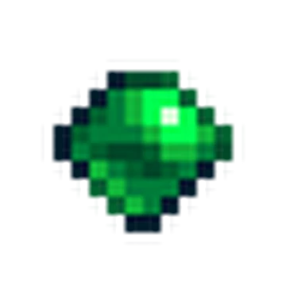
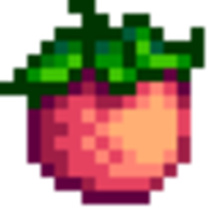
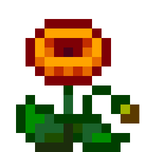
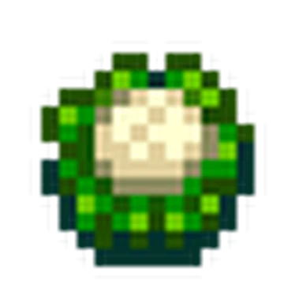
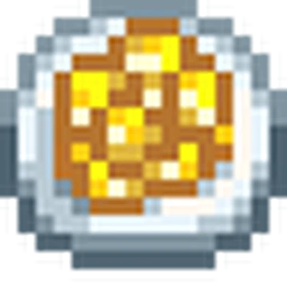
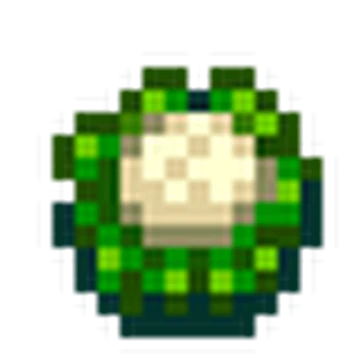
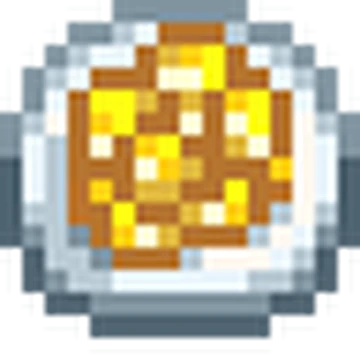
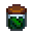
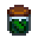

Penny



"Ela é tímida e modesta, sem grandes ambições para a vida além de se estabelecer e começar uma família. Ela gosta de cozinhar (embora suas habilidades sejam questionáveis) e ler livros da biblioteca local.”

Maru
 



"Amigável, extrovertida e ambiciosa, Maru seria uma combinação de sorte para uma novata humilde como você... Você pode ganhar o coração dela, ou ela vai escapar por entre seus dedos e desaparecer de sua vida para sempre?”

Leah


"Ela adora passar o tempo ao ar livre, procurando por uma refeição selvagem ou simplesmente aproveitando os presentes da estação. Ela é uma artista talentosa com um grande portfólio de trabalho... mas ela é muito nervosa para exibi-lo ao público.”


 
